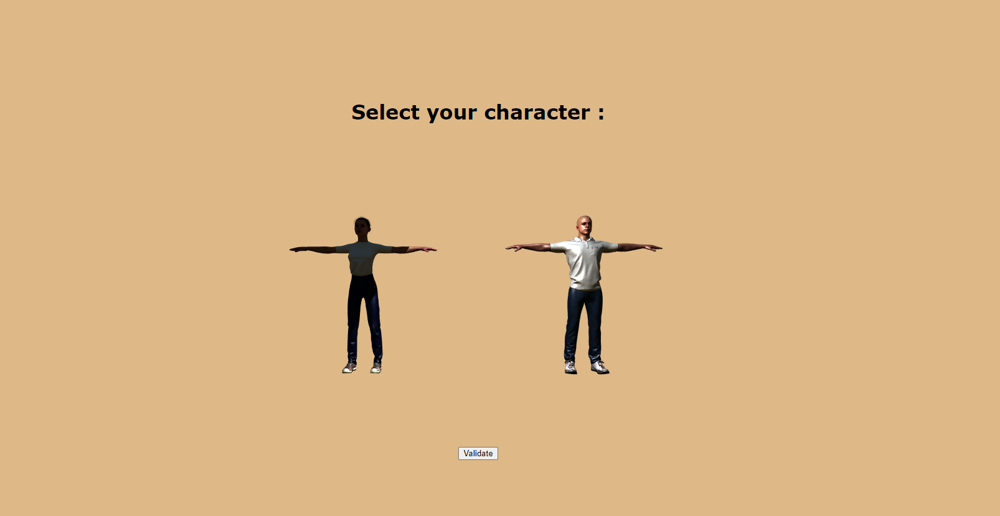
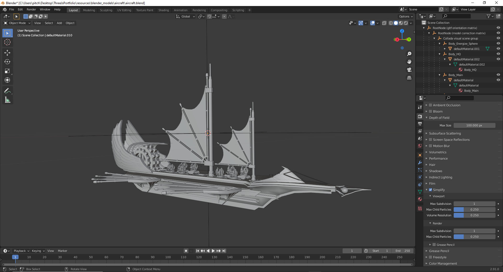

In december 2020, I decided to make a portfolio project for several reasons:
- A cv is too short and doesn’t tell much about the skills
- As a web developer, I felt like I should probably do a website for fun to present all my work done as a student
- You can do whatever you want, really
- I had a lot of free time

Free camera view of the virtual floating island

Character selection screen

The flying ship model in Blender
Why 3d ?
I always had this childish dream to be able to create an open virtual world in which I could create my own rules and code whatever I wanted. Also, younger I was a big fan of MMO/MMORPG games so it's probably also explaining a lot

.
Then, as Javascript is the language I feel the most comfortable with, I decided to give a try to Three.js.
As I was a complete newbie to 3d, it was a sort of half-step out of my comfort zone.
Design/art
Most of the art come from OpenGameArte, Mixamo or SketchFab. TurboSquid and Blender Swap are also nice are exchange platforms
I used Blender to tune/reshape the models that I found on the internet to make them exploitable in Three.js.
Development
I started by browsing the Internet to find some interesting models to make the world I had in mind.
One of my first decision to make was wether it should be a
3rd or 1st person view (does the user see its character or not ?). I decided to go for a 3rd person as I thought it would be more interesting to impersonate a character but it's purely a personal choice.
Then I defined the movement and animations of the character. I found very helpful the videos and repos of
this retired game developer.
After that I had to "make" the environment by placing, rotating, scaling, all the models.
There comes the second biggest challenge and probably the hardest one for me to solve in this project was
collision detection with the environement. Especially what happens when the character goes beyond the edge of the island ?
Well you can try and you will certainly fall and die.
However this wasn't that obvious to code as I had to map each part of the island with planes and triangles and check the intersection of these elements with the hitbox of the character, which I defined with using
THREE.Box3 by the way.
It internally uses an
AABB algo to check wether an object is "touching" another object in 3d or 2d.
Finally I worked on the treasure chest with its animations and the cube that let's you read those lines.
Production
To produce a production build of the app I used
Webpack5. In my configuration it bundles all the JS and minifies the CSS/HTML for better performances.
As it's a static web page, it doesn't use any database so
Github Pages appeared to be an easy hosting solution for this app.
Challenges
Almost every part of this project was extremely challenging as I had a very short amount of time to learn Three.js (
which I almost entirely did thanks to this amazing tutorial), get in touch with 3d, Blender, animations in which I had almost zero knowledge…
I'm glad though that I was doing well in math classes in earlier courses because 3d happens to be full of trigonometry .
But I learnt so much from it and understood the very basics of how 3d games are made.
I haven't been able to keep up with all the challenges as this app is absolutely not a fit for small devices such as mobile phones. I focused only on laptop/desktop devices so responsiveness and performance related issues will probably be encountered.